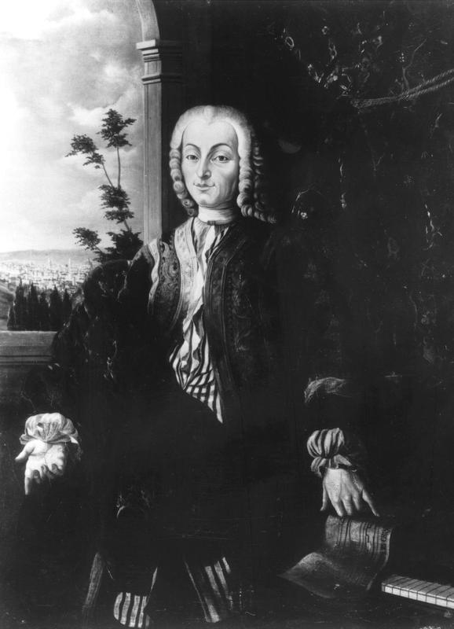
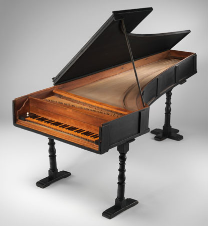

History of the Piano
The history of the piano started in the year 1698, when Italian harpsichord maker Bartolomeo di Francesco Cristofori constructed the first piano. As a 316-year-old instrument, the piano is actually a comparatively new instrument when put next to the forty-thousand-year-old flute. Still, it is a beautiful instrument that has a fascinating history.
Bartolomeo
Cristofori was born in 1655 in Padua, Italy and died in the year of
1731 in Florence, Italy. During his lifetime, he owned a musical instrument shop, where he
had a collection of stringed instruments. Before Cristofori's invention of the piano, many
keyboard instruments were already invented from the 14th century in Europe, and had paved
the pathway for the development of the piano. In fact, the earliest keyboard was the dulcimer,
which then was further improved to become the clavichord, and soon after came the spinet, virginal,
clavecin, followed by the gravicembalo, and eventually they landed in the 15th century with
the harpsichord.
If we go all the way back into ancient history,
mankind had already found that sound can be produced by vibrating strings, and had created
string instruments that were plucked or bowed. In addition, they had stretched
and tied strings over boxes using pegs in order to increase the sound of their creations.
Now back to the keyboards, there was a problem with the harpsichord, which was that it
could only be played at one volume, and the piano player couldn't control whether he wanted
to play more quietly or more loudly. Because of this problem, Cristofori was motivated to
invent the piano, an instrument where the force with which you press the keys can affect the
volume of sound.
After Bartolomeo Cristofori's invention was created, it was first
displayed as the "gravicembalo col piano e forte" in 1709. Later on, the name was shortened
"fortepiano", and then further simplified to just "piano".
Fun Fact! The oldest piano
that still exists today is one from 1720 and can be found in the Metropolitan Museum of Art
in NYC.
